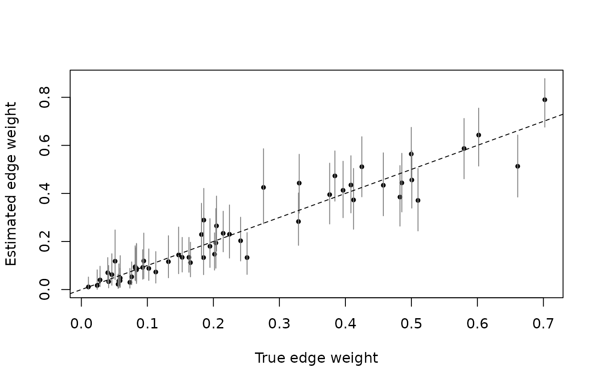
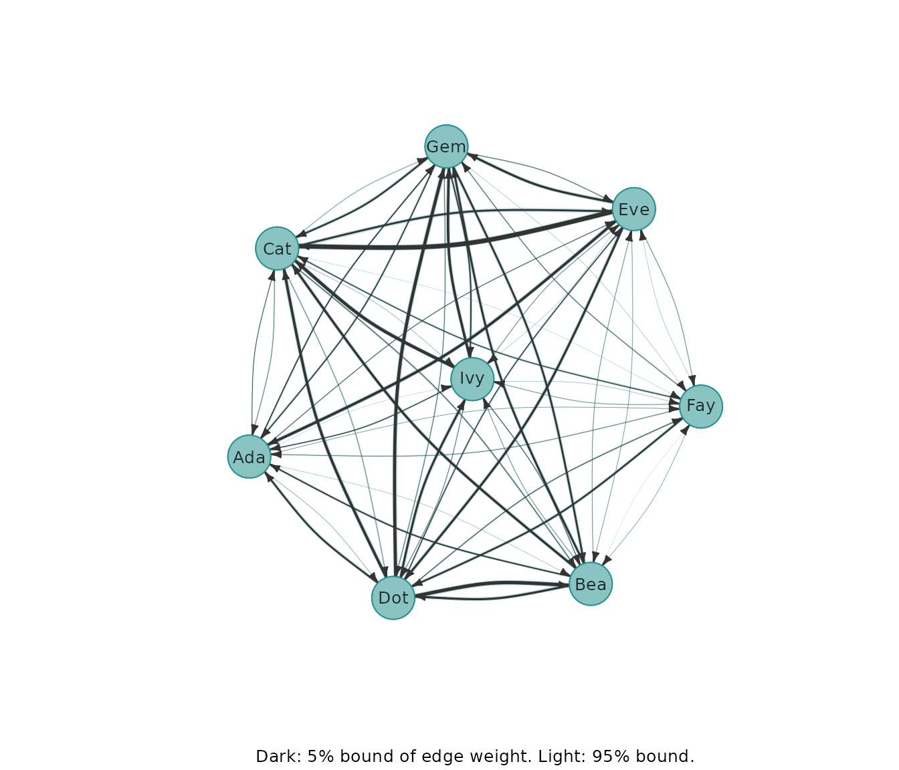
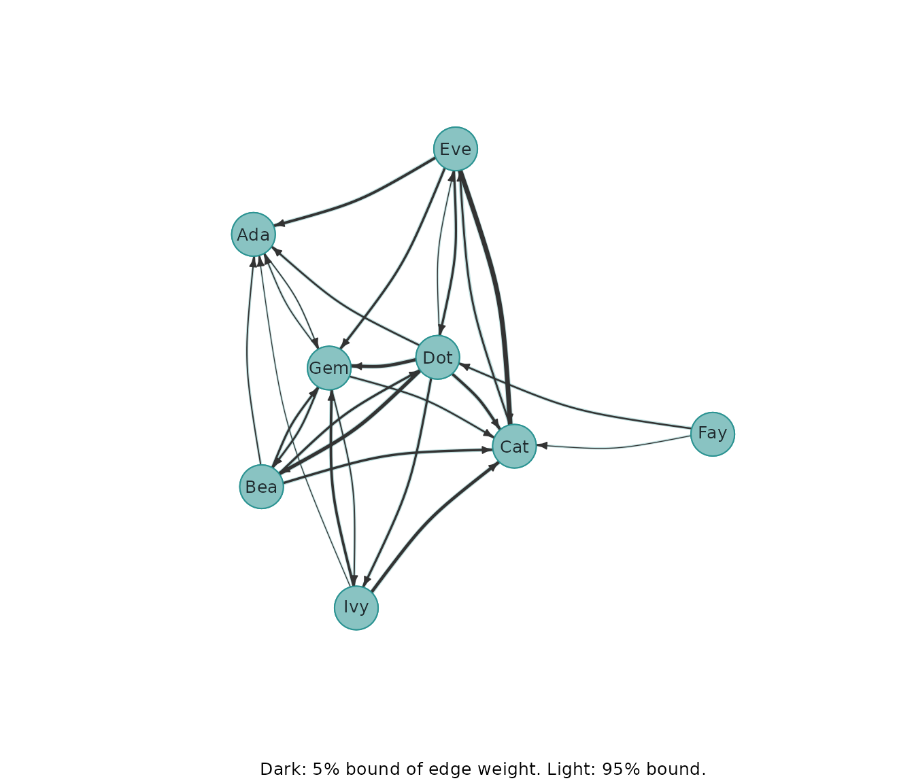

This article analyses a directed network, using simulated grooming
data. In a directed network, the edge from A to B (A grooms B) is
separate from the edge from B to A (B grooms A), and the two can have
different weights. vignette("preparing_data") introduces
the data format for directed networks; this article covers fitting,
plotting, network metrics and regression.
Simulating directed data
We simulate grooming among 8 individuals. Each individual has a tendency to give grooming and a tendency to receive grooming, and each ordered pair (i, j) has its own deviation from what these tendencies predict. On the logit (log-odds) scale, the true edge weight of i → j is
\[\text{logit}(p_{ij}) = \beta_0 + g_i + r_j + \beta_\text{kin} \, \text{kin}_{ij} + \epsilon_{ij},\]
where \(g_i\) is the giving tendency of i, \(r_j\) the receiving tendency of j, \(\text{kin}_{ij}\) indicates whether i and j are related, and \(\epsilon_{ij}\) is specific to the ordered pair, so \(p_{ij}\) and \(p_{ji}\) differ.
nodes <- c("Ada", "Bea", "Cat", "Dot", "Eve", "Fay", "Gem", "Ivy")
n <- length(nodes)
give <- setNames(rnorm(n, 0, 0.8), nodes)
receive <- setNames(rnorm(n, 0, 0.8), nodes)
# Relatedness is symmetric: if i is related to j, j is related to i
kin_matrix <- matrix(0, n, n, dimnames = list(nodes, nodes))
kin_matrix[upper.tri(kin_matrix)] <- rbinom(n * (n - 1) / 2, 1, 0.3)
kin_matrix <- kin_matrix + t(kin_matrix)
# One row for each ordered pair i -> j with i != j
df <- expand.grid(actor = nodes, receiver = nodes, stringsAsFactors = FALSE)
df <- df[df$actor != df$receiver, ]
df$kin <- kin_matrix[cbind(df$actor, df$receiver)]
df$true_logit <- -2 + give[df$actor] + receive[df$receiver] + 1 * df$kin + rnorm(nrow(df), 0, 0.5)
df$true_weight <- plogis(df$true_logit)The data are scan samples of focal individuals. In each scan of a focal individual i, we record whether i was grooming each other individual j. Effort for i → j is the number of scans of i, which differs between individuals, so the same pair can have different effort in each direction. Events are the number of those scans in which i was grooming j:
scans <- setNames(sample(20:60, n, replace = TRUE), nodes)
df$scans <- scans[df$actor]
df$groom <- rbinom(nrow(df), df$scans, df$true_weight)
rownames(df) <- NULL
head(df[, c("actor", "receiver", "kin", "scans", "groom")])
#> actor receiver kin scans groom
#> 1 Bea Ada 0 46 13
#> 2 Cat Ada 0 26 3
#> 3 Dot Ada 0 39 15
#> 4 Eve Ada 1 43 22
#> 5 Fay Ada 1 35 4
#> 6 Gem Ada 0 38 10The data are aggregated, with one row per direction. Every direction
that could have been observed has a row, including those with no
grooming, because bison_model() only estimates edges for
the directions that appear in the data.
sum(df$groom == 0)
#> [1] 2Fitting the edge model
Setting directed = TRUE makes node_1 the
actor and node_2 the receiver. The conjugate model is
enough to estimate the edge weights. It calculates the posterior
distribution of each edge weight (its plausible values given the data
and the prior) exactly, without sampling:
fit_conj <- bison_model(
(groom | scans) ~ dyad(actor, receiver),
data = df,
directed = TRUE,
model_type = "binary_conjugate",
priors = get_default_priors("binary_conjugate")
)The same edges can be estimated with the Stan model, which samples
from the posterior by Markov chain Monte Carlo (MCMC). It allows other
effects to be added to the formula and uses the logit-scale priors from
get_default_priors("binary"):
fit_edge <- bison_model(
(groom | scans) ~ dyad(actor, receiver),
data = df,
directed = TRUE,
model_type = "binary",
priors = get_default_priors("binary"),
seed = 1
)
#> Running MCMC with 4 parallel chains...
#>
#> Chain 1 finished in 0.3 seconds.
#> Chain 3 finished in 0.3 seconds.
#> Chain 2 finished in 0.4 seconds.
#> Chain 4 finished in 0.4 seconds.
#>
#> All 4 chains finished successfully.
#> Mean chain execution time: 0.3 seconds.
#> Total execution time: 0.5 seconds.The two models use different priors (beta(1, 1) on the
probability scale and normal(0, 2.5) on the logit scale),
so their estimates differ slightly:
head(get_edgelist(fit_conj), 3)
#> node_1 node_2 median 5% 95%
#> 1 Bea Ada 0.288 0.190 0.407
#> 2 Cat Ada 0.133 0.051 0.264
#> 3 Dot Ada 0.385 0.270 0.518
head(get_edgelist(fit_edge), 3)
#> node_1 node_2 median 5% 95%
#> 1 Bea Ada 0.283 0.184 0.402
#> 2 Cat Ada 0.119 0.045 0.235
#> 3 Dot Ada 0.385 0.264 0.516The rest of this article uses the Stan model.
Separate edges for each direction
There are 56 edges, one for each ordered pair. summary()
labels them with ->:
summary(fit_edge)
#> === Fitted BISoN edge model ===
#> Data type: binary
#> Formula: (groom | scans) ~ dyad(actor, receiver)
#> Number of nodes: 8
#> Number of dyads: 56
#> Directed: TRUE
#> === Edge list summary ===
#> median 5% 95%
#> Bea -> Ada 0.283 0.184 0.402
#> Cat -> Ada 0.119 0.045 0.235
#> Dot -> Ada 0.385 0.264 0.516
#> Eve -> Ada 0.511 0.386 0.636
#> Fay -> Ada 0.116 0.049 0.224
#> Gem -> Ada 0.265 0.160 0.389
#> Ivy -> Ada 0.203 0.119 0.301
#> Ada -> Bea 0.037 0.011 0.089
#> Cat -> Bea 0.194 0.089 0.337
#> Dot -> Bea 0.643 0.514 0.755
#> Eve -> Bea 0.073 0.027 0.158
#> Fay -> Bea 0.062 0.018 0.149
#> Gem -> Bea 0.395 0.273 0.526
#> Ivy -> Bea 0.147 0.081 0.236
#> Ada -> Cat 0.134 0.072 0.217
#> Bea -> Cat 0.456 0.339 0.578
#> Dot -> Cat 0.513 0.385 0.643
#> Eve -> Cat 0.790 0.676 0.878
#> Fay -> Cat 0.229 0.128 0.359
#> Gem -> Cat 0.371 0.244 0.504
#> Ivy -> Cat 0.564 0.449 0.675
#> Ada -> Dot 0.053 0.020 0.115
#> Bea -> Dot 0.435 0.319 0.557
#> Cat -> Dot 0.118 0.042 0.248
#> Eve -> Dot 0.443 0.318 0.563
#> Fay -> Dot 0.373 0.251 0.504
#> Gem -> Dot 0.133 0.062 0.239
#> Ivy -> Dot 0.112 0.053 0.197
#> Ada -> Eve 0.134 0.073 0.217
#> Bea -> Eve 0.089 0.037 0.174
#> Cat -> Eve 0.425 0.274 0.586
#> Dot -> Eve 0.230 0.131 0.352
#> Fay -> Eve 0.036 0.007 0.107
#> Gem -> Eve 0.133 0.063 0.237
#> Ivy -> Eve 0.092 0.043 0.166
#> Ada -> Fay 0.070 0.029 0.133
#> Bea -> Fay 0.011 0.001 0.052
#> Cat -> Fay 0.017 0.001 0.082
#> Dot -> Fay 0.180 0.092 0.295
#> Eve -> Fay 0.095 0.039 0.182
#> Gem -> Fay 0.033 0.007 0.100
#> Ivy -> Fay 0.040 0.012 0.097
#> Ada -> Gem 0.234 0.157 0.326
#> Bea -> Gem 0.413 0.299 0.534
#> Cat -> Gem 0.082 0.025 0.192
#> Dot -> Gem 0.587 0.461 0.712
#> Eve -> Gem 0.444 0.323 0.567
#> Fay -> Gem 0.144 0.066 0.260
#> Ivy -> Gem 0.473 0.368 0.577
#> Ada -> Ivy 0.022 0.005 0.064
#> Bea -> Ivy 0.088 0.038 0.169
#> Cat -> Ivy 0.048 0.009 0.141
#> Dot -> Ivy 0.434 0.307 0.569
#> Eve -> Ivy 0.030 0.006 0.088
#> Fay -> Ivy 0.088 0.031 0.189
#> Gem -> Ivy 0.289 0.182 0.421get_edgelist() returns the same estimates as a data
frame. The rows for Ada → Bea and Bea → Ada are separate edges:
edgelist <- get_edgelist(fit_edge)
edgelist[edgelist$node_1 %in% c("Ada", "Bea") & edgelist$node_2 %in% c("Ada", "Bea"), ]
#> node_1 node_2 median 5% 95%
#> 1 Bea Ada 0.283 0.184 0.402
#> 8 Ada Bea 0.037 0.011 0.089
df[df$actor %in% c("Ada", "Bea") & df$receiver %in% c("Ada", "Bea"),
c("actor", "receiver", "scans", "groom", "true_weight")]
#> actor receiver scans groom true_weight
#> 1 Bea Ada 46 13 0.32890969
#> 8 Ada Bea 60 2 0.05868297Each estimate is based only on the observations in its own direction.
Because the data were simulated, the estimates can be compared with the true edge weights. Each vertical line is a 90% credible interval, the range that contains the edge weight with 90% probability:
idx <- match(paste(edgelist$node_1, edgelist$node_2), paste(df$actor, df$receiver))
plot(df$true_weight[idx], edgelist$median, pch = 19, cex = 0.6,
ylim = range(edgelist[, 4:5]),
xlab = "True edge weight", ylab = "Estimated edge weight")
segments(df$true_weight[idx], edgelist[, 4], df$true_weight[idx], edgelist[, 5], col = "grey50")
abline(0, 1, lty = 2)
The estimates lie close to the dashed line, where estimated and true weights are equal.
Plotting the network
For directed models, plot_network() draws curved edges
with arrows, so that A → B and B → A can be told apart. As for
undirected networks, the width of the dark line shows the lower bound of
the credible interval, and the width of the light band shows the upper
bound. The arrowheads are drawn on the dark lines:
plot_network(fit_edge, lwd = 5)
With many edges, threshold shows only the stronger ones.
Here only edges with a median weight of at least 0.2 are drawn:
plot_network(fit_edge, lwd = 5, threshold = 0.2)
Node metrics
extract_metric() uses igraph to calculate node metrics
on each posterior network (a network whose edge weights are one draw
from the posterior). For directed networks it uses igraph’s default
settings, which affect how the metrics are defined:
-
node_strengthis calculated withigraph::strength(), whose default ismode = "all". It is the sum of the weights of all edges into and out of a node, that is, in-strength plus out-strength. -
node_degree[t]is calculated in the same way, with edge weights replaced by 0 or 1, so it counts both incoming and outgoing edges with weight at or abovet. -
node_betweennessuses directed shortest paths, with 1/weight as the distance. -
node_closenessusesigraph::closeness(), whose default ismode = "out", so it is based on paths leaving the node. -
node_eigenusesigraph::eigen_centrality(), whose default isdirected = FALSE, so edge directions are ignored.
See vignette("network_metrics") for the definitions of
the metrics.
strength <- extract_metric(fit_edge, "node_strength")
apply(strength, 2, quantile, probs = c(0.05, 0.5, 0.95))
#> Ada Bea Cat Dot Eve Fay Gem Ivy
#> 5% 2.287657 3.033405 3.724489 4.246570 3.201729 1.294251 3.633255 2.378962
#> 50% 2.622079 3.376081 4.095482 4.684636 3.557665 1.572130 4.052157 2.697402
#> 95% 2.959062 3.757984 4.532454 5.093121 3.915298 1.856863 4.440583 3.014823To calculate the grooming given (out-strength) and received
(in-strength) separately, bison_to_igraph() returns a list
of posterior networks, and igraph::strength() is called on
each with mode = "out" or mode = "in". Each
network contains all nodes, in the same order as in the model, so the
columns can be named with the node names:
nets <- bison_to_igraph(fit_edge, num_draws = 1000)
out_strength <- t(sapply(nets, igraph::strength, mode = "out"))
in_strength <- t(sapply(nets, igraph::strength, mode = "in"))
colnames(out_strength) <- colnames(in_strength) <- colnames(strength)In each posterior network, in-strength plus out-strength equals the
strength calculated with igraph’s default mode = "all",
which is what extract_metric() uses. For the first
posterior network:
round(rbind(
in_plus_out = in_strength[1, ] + out_strength[1, ],
strength_all = igraph::strength(nets[[1]])
), 3)
#> Ada Bea Cat Dot Eve Fay Gem Ivy
#> in_plus_out 2.512 2.997 4.014 4.486 3.217 1.757 3.875 2.643
#> strength_all 2.512 2.997 4.014 4.486 3.217 1.757 3.875 2.643The posterior medians of out-strength and in-strength can be compared with the simulated giving and receiving tendencies:
round(data.frame(
give = give,
out_strength = apply(out_strength, 2, median),
receive = receive,
in_strength = apply(in_strength, 2, median)
), 2)
#> give out_strength receive in_strength
#> Ada -0.50 0.72 0.46 1.91
#> Bea 0.15 1.79 -0.24 1.57
#> Cat -0.67 1.05 1.21 3.06
#> Dot 1.28 3.00 0.31 1.69
#> Eve 0.26 2.40 -0.50 1.17
#> Fay -0.66 1.09 -1.77 0.49
#> Gem 0.39 1.64 0.90 2.40
#> Ivy 0.59 1.64 -0.04 1.04
par(mfrow = c(1, 2))
plot(give, apply(out_strength, 2, median), pch = 19,
xlab = "Simulated giving tendency", ylab = "Out-strength (median)")
plot(receive, apply(in_strength, 2, median), pch = 19,
xlab = "Simulated receiving tendency", ylab = "In-strength (median)")Individuals with higher simulated giving tendencies tend to have higher out-strength, and individuals with higher receiving tendencies tend to have higher in-strength. The relationships are not exact, because edge weights also depend on kinship and on the pair-specific deviations.
The posterior draws of in- and out-strength can be used in further analyses in the same way as other metrics. For example, the difference between out-strength and in-strength of each individual in each draw gives the posterior distribution of how much more grooming it gives than it receives:
Regression on directed edge weights
Dyadic regressions on directed edges use one row per ordered pair, with the actor and receiver in the same order as in the edge model. Here we test whether kinship predicts grooming:
df_dyadic <- df[, c("actor", "receiver", "kin")]
head(df_dyadic)
#> actor receiver kin
#> 1 Bea Ada 0
#> 2 Cat Ada 0
#> 3 Dot Ada 0
#> 4 Eve Ada 1
#> 5 Fay Ada 1
#> 6 Gem Ada 0Edges that share an individual are not independent. As for undirected
networks, a multi-membership random effect
(1 | mm(actor, receiver)) accounts for this. It gives each
individual one effect that applies to all its edges, as actor or as
receiver. bison_brm() matches each row to the edge in the
direction given, so the row for Ada → Bea uses the edge weight of Ada →
Bea:
fit_kin <- bison_brm(
bison(edge_weight(actor, receiver)) ~ kin + (1 | mm(actor, receiver)),
fit_edge,
df_dyadic,
num_draws = 5, # Small for demonstration; use 100 or more in practice
refresh = 0,
silent = 2
)
#> Warning: 2 of 2000 (0.0%) transitions ended with a divergence.
#> See https://mc-stan.org/misc/warnings for details.
#> Warning: 1 of 2000 (0.0%) transitions ended with a divergence.
#> See https://mc-stan.org/misc/warnings for details.
#>
#> Warning: 1 of 2000 (0.0%) transitions ended with a divergence.
#> See https://mc-stan.org/misc/warnings for details.
summary(fit_kin)
#> Warning: There were 4 divergent transitions after warmup. Increasing
#> adapt_delta above 0.8 may help. See
#> http://mc-stan.org/misc/warnings.html#divergent-transitions-after-warmup
#> Family: gaussian
#> Links: mu = identity
#> Formula: bison_edge_weight ~ kin + (1 | mm(actor, receiver))
#> Data: structure(list(data = structure(list(actor = c("Be (Number of observations: 56)
#> Draws: 10 chains, each with iter = 2000; warmup = 1000; thin = 1;
#> total post-warmup draws = 10000
#>
#> Multilevel Hyperparameters:
#> ~mmactorreceiver (Number of levels: 8)
#> Estimate Est.Error l-95% CI u-95% CI
#> sd(Intercept) 1.14 0.51 0.33 2.28
#>
#> Regression Coefficients:
#> Estimate Est.Error l-95% CI u-95% CI
#> Intercept -1.86 0.47 -2.83 -0.93
#> kin 1.12 0.40 0.34 1.91
#>
#> Further Distributional Parameters:
#> Estimate Est.Error l-95% CI u-95% CI
#> sigma 1.17 0.14 0.94 1.47
#>
#> Draws were sampled using sample(hmc). Overall Rhat and ESS estimates
#> are not informative for brm_multiple models and are hence not displayed.
#> Please see ?brm_multiple for how to assess convergence of such models.Edge weights in bison_brm() are on the logit scale, so
the coefficient of kin is on the log-odds scale. The data
were simulated with an effect of 1, which is inside the 95%
interval.
The multi-membership term treats the actor and receiver in the same
way, so it does not separate giving and receiving tendencies. Separate
random effects for actors and receivers,
(1 | actor) + (1 | receiver), can be added if the variation
between actors and between receivers is of interest.
bison_brm() fits a model to each of the
num_draws posterior networks and combines the results, as
in multiple imputation. brms may therefore give convergence warnings for
the combined fit. See vignette("bison_brms") for more on
regressions.